Stencil object
Defines a design composed of UI controls (without associated code) to be reused in different objects. DescriptionStencils allow you to create compositions of UI controls to be able to define designs (without associated code) that can be reused in different objects. They integrate the work of designers and developers and allow sharing designs (reuse them "as a unit" in different objects, export them, etc.). You can even define several Stencils that have the same controls but are distributed or presented in different ways, and this allows you to keep the same design in different objects but with variants. Surely, they help you to define standards and add consistency, simplifying the implementation of Design Systems. Below is described how Stencils can help you: 1. Reuse the visual design of a table control in multiple panels by wrapping it as a Stencil.Consider the BitBitNews application, which manages and shows articles about cryptocurrencies as well as the latest valuations. It contains the following Transactions:
Coin
{
CoinId*
CoinName
CoinCode
CoinImage
CoinCurrentPrice
CoinCurrentTrend
}
Article
{
ArticleId*
ArticleTitle
ArticleImage
}
and two Panels for Smart Devices: Coins and News. At runtime the panels will look as follows: The blue frames in the panels point out a design that is desired to be always reused to show the coins (a coin image followed by its code: ). Initially, the News Panel for Smart Devices (whose object name in the KB is: ListArticles) is designed as shown below: 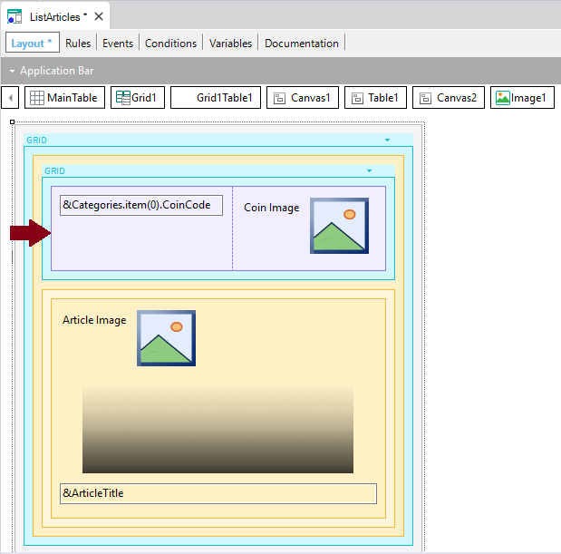 The table that contains a coin code and a coin image (in this particular case the two controls that show the data are elements of an item collection variable which have been loaded with a certain logic) can be reused in other objects with the same design. So, it makes sense to wrap the table as a Stencil. To achieve this, right-click on the table and in the contextual menu select: Wrap as New Stencil. Then, the following dialog is opened to enter a name for the new Stencil: 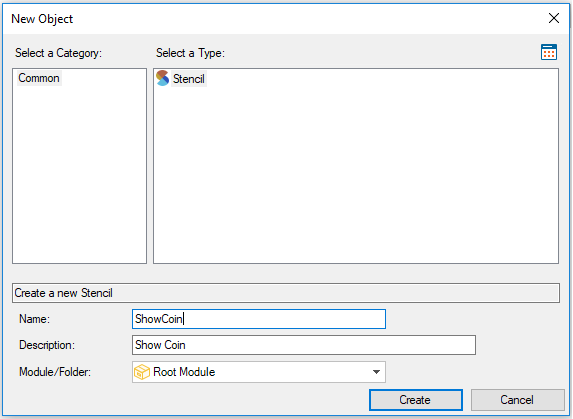 After assigning a name to the Stencil and pressing the Create button, the Stencil will be created as a new object: 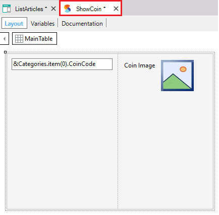 You can make any change in the ShowCoin Stencil object (colors, controls movements, settings, etc.). Once saved, the changes will be reflected in the object that contains the Stencil (the ListArticles panel). Even, to make the Stencil more generic, you can replace the &Categories.item(0).CoinCode variable with a new scalar variable (i.e. &CoinCode). Likewise, you can replace the &Categories.item(0).CoinImage variable with a new scalar variable (i.e. &CoinImage): 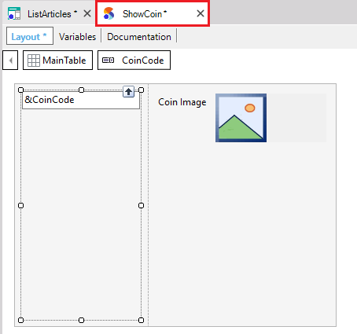 Now suppose you remove the label associated with the image in the Stencil object: As already explained, appearance changes made to a Stencil object, are applied to the objects that contain the Stencil. So, the ListArticles panel does not show the label anymore: 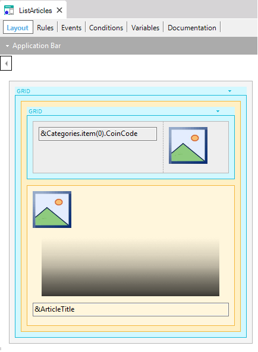 On the other hand, notice that the original variables were not changed in the panel, that is to say, the ListArticles panel still contains the original variables (and of course the logic that was defined for it). Other panels could share the same Stencil to inherit the layout, and you may replace these two controls, for example, by attributes. What is applied and reused is the Stencil appearance. When a second panel includes the Stencil, and the two controls are replaced by two attributes, it is probably unnecessary to define logic associated with that data load. The Stencil has nothing to do with the logic defined in the object. Even though the layout and the appearance properties now can only be changed in the ShowCoin Stencil and not in the ListArticles panel (the panel layout shows the Stencil with gray color), while positioned on the Stencil in the panel, you can quickly access the Stencil object by right-clicking and selecting in the context menu: Open Referenced Stencil. 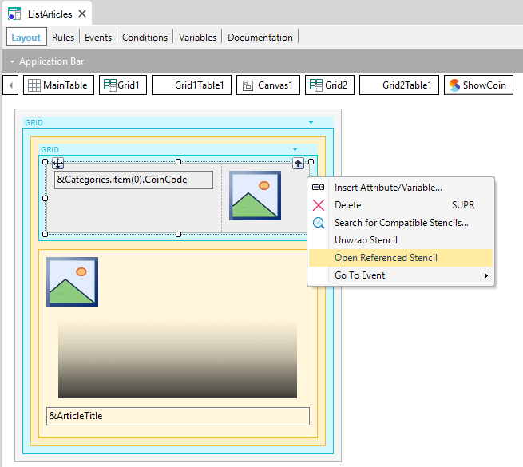 Finally, to reflect the exact design that must be shown at runtime, in the Stencil object, let’s swap the image with the code: 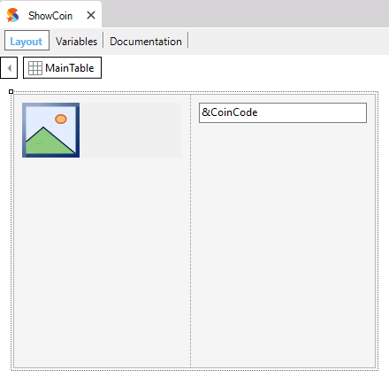 and the ListArticles panel “receives” the corresponding update. Now, suppose that another panel (ListCoins) is defined as shown below: 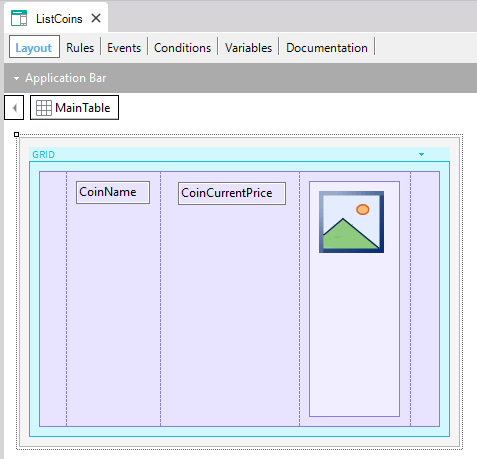 The ShowCoin Stencil must be inserted in the grid on the left, because the coin image and the coin code must be shown with the standard design, being the first data to be shown for each line. You can drag it into the grid from the KB Explorer or from the Stencils window(*). After that, you only need to select each control of the ShowCoin Stencil and replace each suggested variable with the corresponding attribute (&CoinImage must be replaced with CoinImage, and &CoinCode must be replaced by CoinCode): 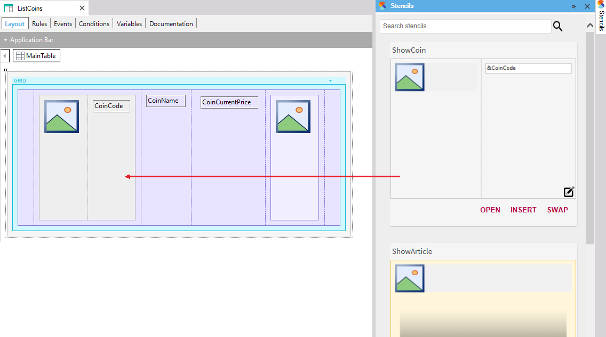 Note: As you may have noticed, in the first panel (ListArticles) the Stencil is inside a Flex Grid (which presents the data in a horizontal line) while in the second panel (ListCoins) the Stencil is inside a Standard Grid. Another possibility to create a Stencil object is directly by selecting in the main GeneXus Menu: File > New > Object. After created, as mentioned above, to include it in some object you only have to drag it from the KB Explorer or from the Stencils window(*). A Stencil object will always contain variables. This is because a Stencil hasn't got navigation nor a logic defined. So, if a Stencil is created from a Panel with attributes, when you save the Stencil the attributes are converted to variables. Also, if you create a new Stencil directly, it is reasonable to use variables. 2. Swapping Stencils that contain the same controls.Stencils can also be used to quickly change between alternative designs. Suppose you continue working with the same Knowledge Base. Now suppose you are asked to modify the design of the coin by showing the coin image below the coin code:
Instead of editing the ShowCoin Stencil you can save it as another Stencil object and update the second one to keep both design alternatives: 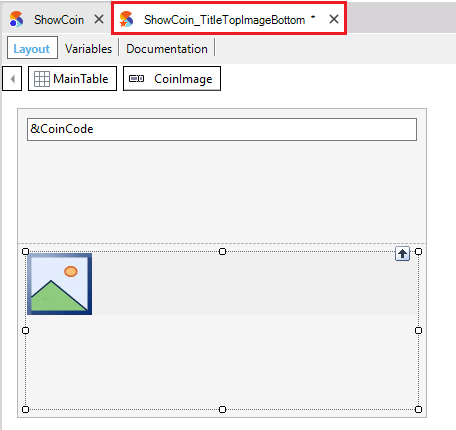 As both Stencils contain the same controls, from an object that contains one of them, you can swap it with the other (or with any other defined that contains the same controls). So, open for example the ListCoins panel and select the ShowCoin Stencil control. After that, search in the Stencils window(*) the ShowCoin_TitleTopImageBottom and press its SWAP button: 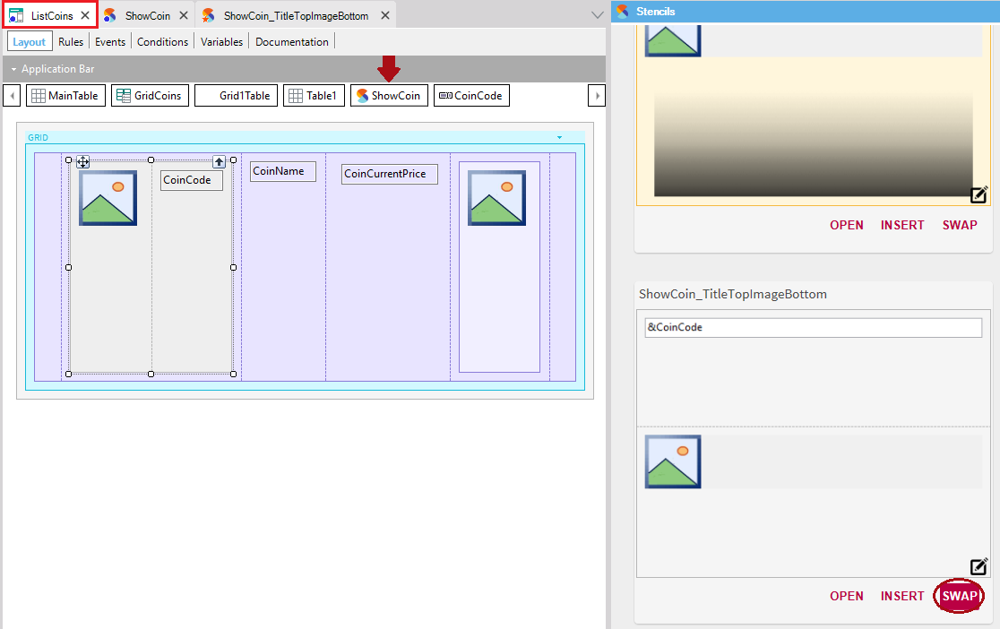 Thus, the referenced Stencil is the one you have chosen, and the design has changed accordingly: 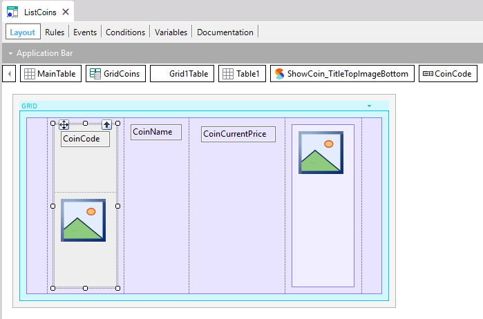 Note: You can decide to use the new Stencil only to show the coins in that way in that object, or in certain objects, or in all objects that show coins since coherence is maintained. The two Stencils correspond to the same concept of a coin, with two alternative designs. 3. Design for both Web and Smart Devices while maintaining conceptual unity.When designing an app for both Web and Smart Devices, there are some visual elements across both platforms that are conceptually the same, even if they have to be designed differently. To take this into account, Stencils contain two layouts, one for Smart Devices and another one for the Web. For instance, in the BitBitNews Knowledge Base, the ShowCoin Stencil was designed for SD, but it offers a combo as the image shows, to switch between the layouts for SD and Web to edit both: 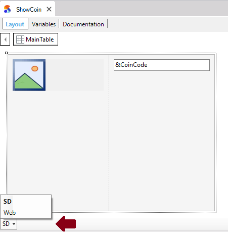 The layouts need to be edited separately because, even if they look the same at runtime, they use different design properties and might contain different controls. If being in a Web Panel object you open a Stencil by selecting Open Referenced Stencil, it takes you directly to its Web layout. In the same way, if being in a Panel object you open a Stencil by selecting Open Referenced Stencil, it takes you directly to its SD layout. Also, if you drag a Stencil from the KB Explorer or the Stencils Windows to a Web Panel object, the Stencil Web layout will be inserted. On the other hand, if you drag a Stencil to a Panel object the Stencil SD layout will be inserted. Recommendation: When you open the Stencil object, observe in which tab you are positioned before making changes. (*) You can open the Stencils window by selecting in the main GeneXus Menu: View > Other Tool Windows. AvailabilityThis feature is available as of GeneXus 15 upgrade 12 Scope
Videos
|